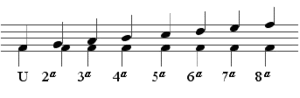

L'interval és la distància existent entre dues notes. Per a conèixer quin és l'interval entre dues notes és suficient amb contar el nombre de tons i semitons que hi ha entre la primera i la segona, ambdues incloses. Aquesta és la mesura de manera quantitativa, però també es pot mesurar de manera equivalent amb graus i notes naturals (mesura qualitativa).
Hi ha intervals tonals i modals. Els tonals tenen un valor just mentre que els modals poden contenir un valor major o un valor menor. Tots els intervals poden ser ascendents o descendents. Poden ser simples (intervals amb distància no major a una octava) o composts (distància superior a una octava). Com que a partir de la octava les notes es repeteixen, cada interval compost conté un interval simple que és equivalent. Per exemple, una novena es el mateix que una segona a la octava.
Els intervals també es divideixen en armònics i melòdics: els armònics consisteixen en sons simultanis, mentre que els melòdics consisteixen en sons consecutius.
Aquests són alguns dels intèrvals simples representats al pentagrama:

He gravat tot el repertori d'intèrvals simples, es poden escoltar a la seguent taula:
| Interval | Mostra de so | Distància (tons i semitons) |
| Uníson | No hi ha cap distància | |
| Segona menor | 1 semitò | |
| Segona major | 1 to | |
| Tercera menor | 1 to + 1 semitò | |
| Tercera major | 2 tons | |
| Quarta justa | 2 tons + 1 semitò | |
| Quarta augmentada | 3 tons | |
| Quinta justa | 3 tons + 1 semitò | |
| Sexta menor | 4 tons | |
| Sexta major | 4 tons + 1 semitò | |
| Sèptima menor | 5 tons | |
| Sèptima major | 5 tons + 1 semitò | |
| Octava | 6 tons |